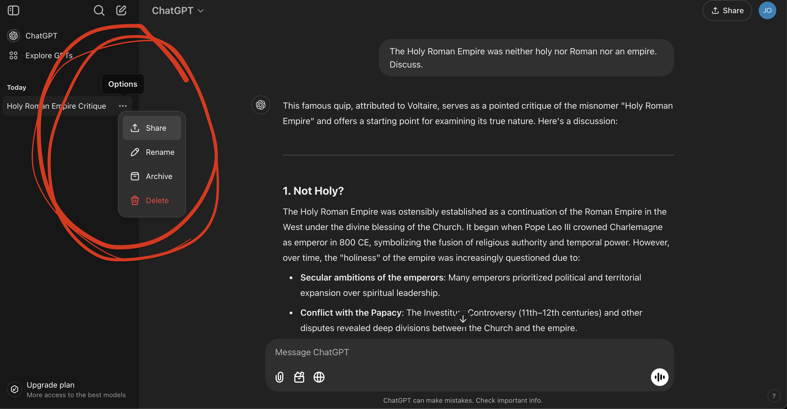

Policies
Communication
If you wish to ask content-related questions in writing, please do not do so via e-mail. Instead, please use the course discussion forum Ed Discussion. That way all members of the teaching team can see your question, and all students can benefit from the ensuing discussion. You are also encouraged to answer one another’s questions.
If you have questions about personal matters that may not be appropriate for the public course forum (e.g. illness, accommodations, etc), then please e-mail the instructor directly (john.zito@duke.edu).
You can ask questions anonymously on Ed. The teaching team will still know your identity, but your peers will not.
Late work and extensions
No late work will be accepted unless you request an extension in advance by e-mailing the instructor directly (john.zito@duke.edu). All reasonable requests will be entertained, but extensions will not be long.
Regrade requests
If you receive a graded assignment back, and you believe that some part of it was graded incorrectly, you may dispute the grade by submitting a regrade request in Gradescope. Note the following:
- You have one week after you receive a grade to submit a regrade request;
- You should submit separate regrade requests for each question you wish to dispute, not a single catch-all request;
- Requests will be considered if there was an error in the grade calculation or if a correct answer was mistakenly marked as incorrect;
- Requests to dispute the number of points deducted for an incorrect response will not be considered;
- Regrade requests are not a mechanism for asking for clarification on feedback. Those questions should be brought to office hours;
- No grades will be changed after the final exam has been administered on Saturday May 3;
A regrade request can result in your grade going up, staying the same, or going down if we determine that, in fact, the original grader was too lenient.
Attendance
Live your life. Attendance is not strictly required for any of the class meetings. The responsibility lies with us to make class meetings sufficiently engaging and informative that you choose to attend. Having said that, success in this class and regular attendance are probably highly positively correlated. Furthermore, while lab attendance is not required, regular attendance is most likely the path of least resistance to earning full credit for the lab component of your final grade. The labs are designed so that they can be completed in one sitting more or less, and they are due at midnight the same day. So show up to lab, bang it out, and move on with your life.
Accommodations
If you need accommodations for this class, you will need to register with the Student Disability Access Office (SDAO) and provide them with documentation related to your needs. SDAO will work with you to determine what accommodations are appropriate for your situation. Please note that accommodations are not retroactive and disability accommodations cannot be provided until a Faculty Accommodation Letter has been given to me. Please contact SDAO for more information: sdao@duke.edu or access.duke.edu.
Collaboration
You are encouraged to discuss and collaborate on problem sets and labs, but all submitted work must be entirely your own. You should not be sharing your solutions or copying other people’s work. This will be treated as plagiarism, and both the sharer and the recipient(s) will be penalized equally.
Use of outside resources, including AI
It basically comes down to this:
Do your own math and write your own words, but write code however you want (as long as you cite your sources).
You are expected to produce all mathematical reasoning, arguments, and calculations yourself, and your write-ups should be original to you. You should not use ChatGPT or anything like it to solve math problems or write words for you. When it comes to code, you are free to use any outside resources (StackOverflow, ChatGPT, etc) to help you complete coding tasks as long as you cite where you obtained any code you directly use (or use as inspiration). Any recycled code that is discovered and is not explicitly cited will be treated as plagiarism.
Here are some general guidelines for citing AI-generated content. In this class, if you use something like ChatGPT to help you, you need to cite that by providing a direct link to the conversation you had with the bot, like this: https://chatgpt.com/share/677c4060-1d58-8008-8e47-5caa5556a825. You can generate such a link here:

Duke Community Standard
As a student in this course, you have agreed to uphold the Duke Community Standard and the practices specific to this course.
Any violations in academic honesty standards as outlined in the Duke Community Standard and those specific to this course will automatically results in a zero for the relevant portion or the entire assignment, and will be reported to the Office of Student Conduct & Community Standards for further action. Furthermore:
- If a conduct violation results in a zero on a lab or problem set, that zero will not be dropped;
- If a conduct violation results in a zero on an midterm, that zero will not be replaced with your final exam score;
- If we discover that students are sharing and copying assignment solutions, all students involved will be penalized equally, the sharer the same as the recipients.